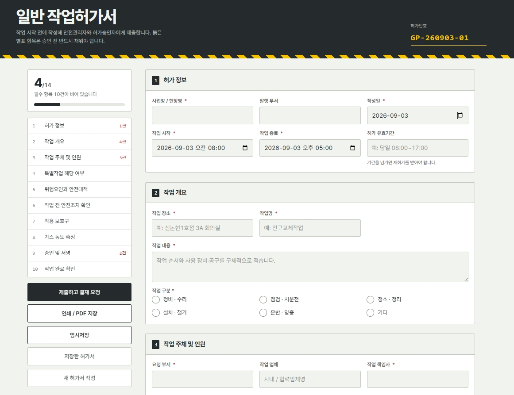

1조
웹 브라우저 접속 가능
스마트 작업허가서 발급 시스템
1. 왜 만들었나요?
- •서면 누락 원천 차단: 위험요인·안전조치 미기입 시 제출 자체가 불가능하도록 통제
- •대면 결재 지연 해소: 담당자를 찾아다니지 않고 메일 링크로 즉시 결재 및 단계 이관
- •감사 대응 데이터 축적: 신청부터 종료 보고까지 구글 시트에 1건당 1줄로 자동 아카이빙
2. 핵심 기능
빈칸 방지 10개 섹션
미기입 필수 항목 수 실시간 표시, 위험요인 체크 시 안전대책 입력란 강제 활성화
안전기준 자동 판정 & 경고
가스 농도 수치 입력 시 적합 여부 자동 판정, 화기·밀폐 등 특별작업 선택 시 경고 표출
비대면 링크 결재 & 이력 추적
안전관리자 검토 링크 발송, 수정 이력 보존, 모바일 화면 직접 전자서명 및 사유 입력 반려
작업 종료 보고 & A4/시트 연동
동일 링크로 현장 종료 보고 시 자동 종결, A4/PDF 출력 지원 및 전 이력 구글 시트 저장
3. 이후 활용 계획
• 안전보건파트 실무 적용: 기존 종이 서식을 대체하고 화기·밀폐·고소 등 특별작업 허가서 연계 확장
• 부서별·장소별 발행 건수, 반려 사유, 평균 결재 소요시간 자동 통계 집계 구축
• 부서별·장소별 발행 건수, 반려 사유, 평균 결재 소요시간 자동 통계 집계 구축
화면 미리보기
클릭 시 확대 🔍
work-permit-app.vercel.app
ONLINE

일반 작업허가서 (#2026-0902)
미기입 0개 (검증완료)
작업장소: 강남 2호점 8F 공용부
작업유형: 천장 배선 수리
가스 농도 (산소 20.9% · 유해가스 0%)
✓ 적합 판정 완료
✍️ 관리감독자 모바일 서명
링크 수신 후 모바일에서 원클릭 서명 승인
Approved
체험 링크